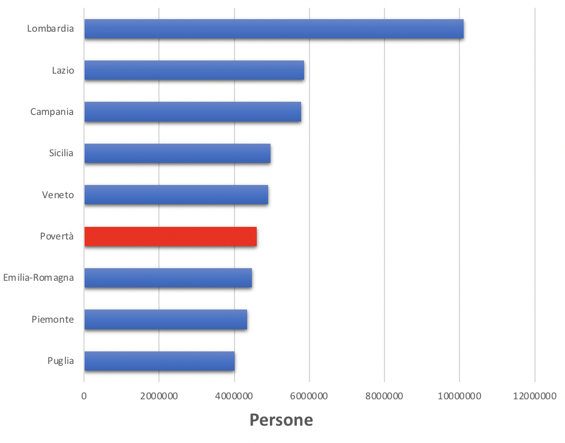

La ricchezza, in scala
€1.000
31.393€ (reddito mediano di una famiglia)
€1 milione
€26,5 miliardi (ricchezza di Giovanni Ferrero)
Lol, ahaha stavo scherzando, siamo appena a un terzo della strada! Continua ad andare avanti comunque, c'è ancora molto da vedere.
Persino le fortune dei ricchi sono eclissate dall'incomprensibile ricchezza dello 0,0001%.
Queste persone si immaginano di essere favolosamente ricche, e spesso si oppongono a misure redistributive.
Ma molti non hanno completamente realizzato la distanza tra loro e i super ricchi.
Possiamo vivere in un mondo in cui esistono i ricchi, anche senza regalare praticamente tutti i soldi esistenti ai super ricchi.
Nessun essere umano al mondo necessita o merita tutta questa ricchezza.
I 41 miliardari italiani (€176,5 miliardi)
"Miliardi di euro" sono una quantità tale che potremmo tranquillamente dire "Gazilioni di euro." Quindi in questa sezione cercheremo di raffigurare questa scala paragonandola a cosa si potrebbe fare con una frazione di questa ricchezza.
Mentre procediamo, cercate sempre di tenere a mente questo: tutta questa ricchezzza è controllata da un gruppo di individui talmente piccolo che se noleggiassero un autobus turistico, avanzerebbero ancora posti.
Cosa potremmo fare con meno del 3% di questi soldi?
Far uscire tutti gli italiani dalla povertà.
Popolazione delle regioni italiani, confrontate alla povertà, 2019
Ogni singola persona in Italia potrebbe essere fatta uscire dalla povertà con un versamento una tantum di circa 1.000€ per famiglia, o 750€ per individuo. Il costo totale si aggirerebbe sui 3,75 miliardi di euro, ovvero circa il 2% della ricchezza controllata da 41 persone.
Potrebbe sembrare controintuitivo che un sussidio una tantum possa avere un impatto duraturo sulla povertà cronica. Ma uno degli aspetti sorprendenti della povertà è che è mobile. Le persone entrano ed escono dalla povertà molte volte durante le loro vite, e un anno buono puo avere effetti importanti e duraturi.
C'è ormai una grande mole di dati a sostegno dell'idea che trasferimenti una tantum di denaro possano trasformare in maniera permanente un'economia locale. Con un afflusso improvviso di contante, le persone investono nel loro futuro. Tornano a scuola, comprano mezzi di trasporto, pagano per la cura dei figli, saldano i debiti e intraprendono tutta una serie di iniziative per migliorare le loro carriere e le loro prospettive.
Negli Stati Uniti, delle persone che escono dalla povertà in un dato anno, circa la metà ne resta fuori per almeno 5 anni in seguito. Circa un terzo sono ancora fuori dalla povertà dieci anni dopo.
Questa non sarebbe una soluzione permanente per tutti. Qualcuno rapidamente tornerà in povertà e altri hanno debiti o problemi talmente grandi, che un tale sussidio non farebbe molta differenza. Ma per milioni di persone, sarebbe un cambiamento epocale. Sarebbe un programma sociale che ridefinirebbe un'intera generazione, cambiando il volto alla nostra economia per decenni..
Test Every American for Coronavirus
As of this writing, testing in the United States falls far short of what is needed to re-open the economy. By some estimates, sufficiently ramping up testing to around 30 million tests per week would cost around €100 billion total, or about 2.8% of the wealth currently controlled by the 400 richest Americans.
What could we do with under 5% of this money?
Provide €1,200 to every American household.
The recent coronavirus stimulus was the largest ever passed by congress. It was financed entirely through deficit spending, which will be repaid by taxpayers for generations. The burden of repaying this debt could be erased in an instant with a tax on the super rich so small that they would not even feel it.
The wealth of 400 Americans could have financed the entire CARES act, including the corporate bailouts, expanded unemployment, and expanded testing—with a trillion and a half left over.

Instead, the American tax payer will be stuck with the bill.
What could we do with under 6% of this money?
Refund 2018 taxes for all households earning under €80,000
In 2018, the combined federal tax revenue among all US households earning under €80,000 per year was around €200 billion. This money—taken entirely from poor and middle class Americans—could be returned for a tiny fraction of the wealth controlled by the .0001%.
What could we do with a third of this money?
Give €10,000 to every American household
As Americans debate how and when to open the economy after coronavirus, we are frequently presented with a seemingly impossible choice between risking millions of lives and sliding into a great depression through a continued lockdown. This is a repugnant lie.
The money to weather this storm while maintaining quarantine exists, it's just a matter of finding the political will to take it.
Cosa potremmo fare con la metà di questi soldi?
Debellare la Malaria
La malaria è una delle peggiori malattie infettive che affliggono l'umanità. È probabilmente la malattia che ha ucciso più persone nella storia. Nel solo XX secolo la malaria ha ucciso più persone che la peste in tutta la storia.
Il Covid-19 ci ha mostrato cosa voglia dire vivere nel terrore di una malattia mortale. Purtroppo per gran parte del mondo, questo orrore era una realtà quotidiana anche prima del coronavirus.
Tutte queste morti sono evitabili. Curare e prevenire la malaria è un processo noto, universalmente adottato nel mondo sviluppato.
Si stima che la malaria potrebbe essere debellata entro il 2030 al costo di 1.54€ per persona a rischio all'anno, o circa 84 miliardi di €. Questo equivale a circa il 47% della ricchezza posseduta dai 41 italiani più ricchi (o il 2.8% della ricchezza dei 400 americani più ricchi).
All'incirca 800 bambini moriranno oggi di malaria. Un ristretto gruppo di persone potrebbero evitarlo per una somma talmente piccola che difficilmente avrebbe un impatto sulle loro vite. Ma hanno scelto di non farlo.
What could we do with 70% of this money?